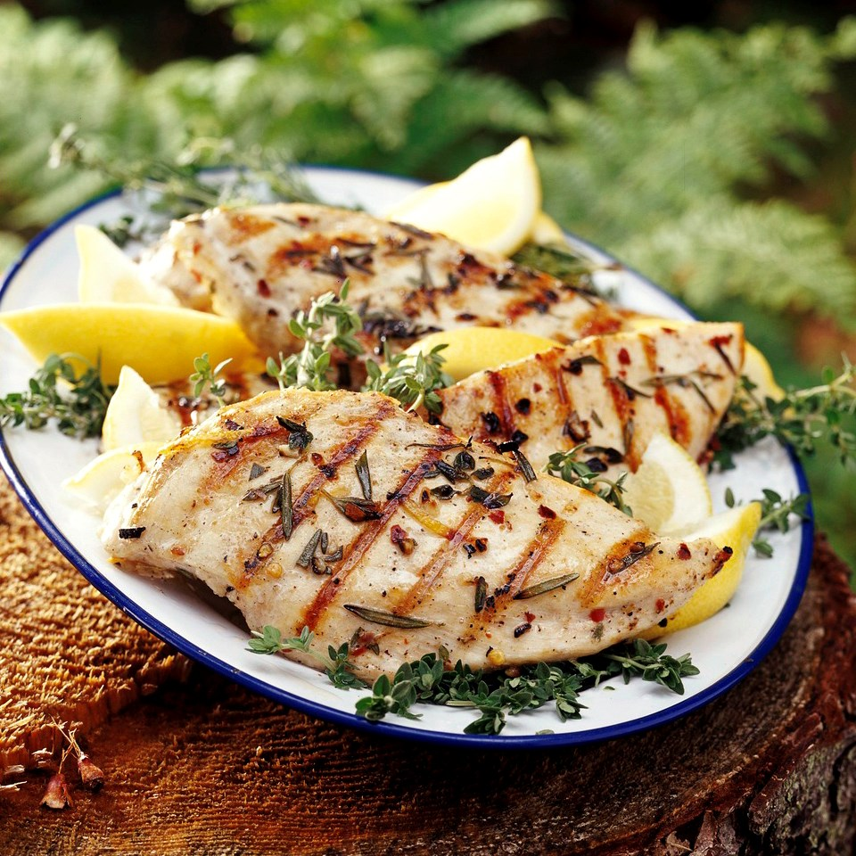

Grilled Lemon Herb Chicken
What is Grilled Lemon Herb Chicken?
The recipe for Grilled Lemon Herb Chicken is a simple and flavorful recipe that can be made ahead of time and marinated for as little as 30 minutes or even for several days in the fridge.
Ingredients
Skinless, boneless chicken breast (or chicken thighs)
Lemons
Garlic (or sub-granulated garlic)
Fresh herbs (oregano, thyme, rosemary, parsley, sage)
Olive oil
Salt
Pepper
Chili flakes
Instructions / How to Cook
1. Pound the thick end of each chicken breast into similar sized thicknesses- aiming for 3/4 of an inch thick. If your chicken breasts are very large, cut them at a diagonal into smaller 4-6 ounce portions. The goal here is to have similar-sized pieces so they take roughly the same amount of time to grill through. Pounding the chicken will help achieve this.
2. Make the marinade! Zest 1-2 lemons and place in a bowl along with finely minced garlic and chopped herbs. Here I’m using oregano – but rosemary, thyme, or sage would also be lovely here. Pour in the olive oil, salt and pepper. Add chili flakes if you like. TIP: This is a great way to try Aleppo or Urfa Biber if so inclined- both flavorful chili flakes that are not overly spicy.
3. Marinate the Chicken. Place the chicken breast in a bowl, baking dish or large ziplock and pour all but 2 tablespoons of the chicken marinade over top. Massage this into all sides of the chicken breasts, really getting in there.
4. Marinate for at least 30 minutes. Or for more flavor, marinate a few hours, overnight, or even for a few days in the fridge! At this point, you could also freeze it right in the marinade.
5. Preheat the grill to medium heat. Remove the chicken from the marinade and grill for 5-7 minutes per side, or until cooked through. Serve immediately.